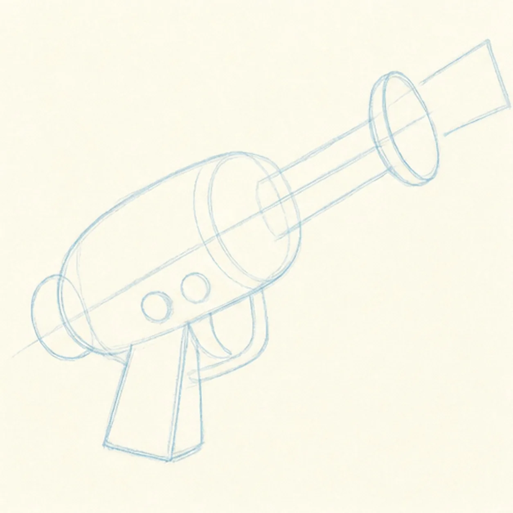
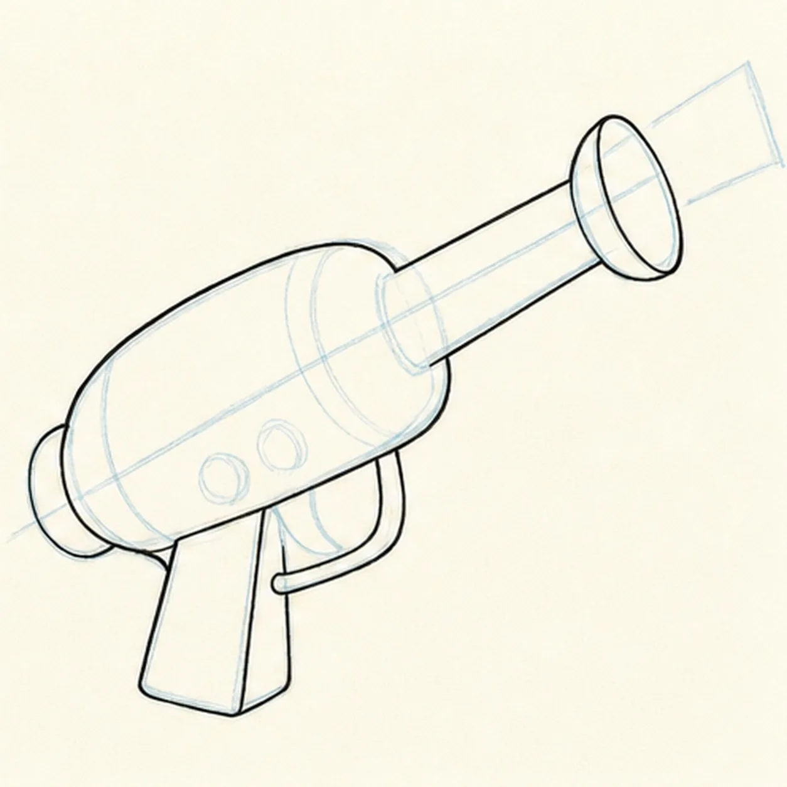
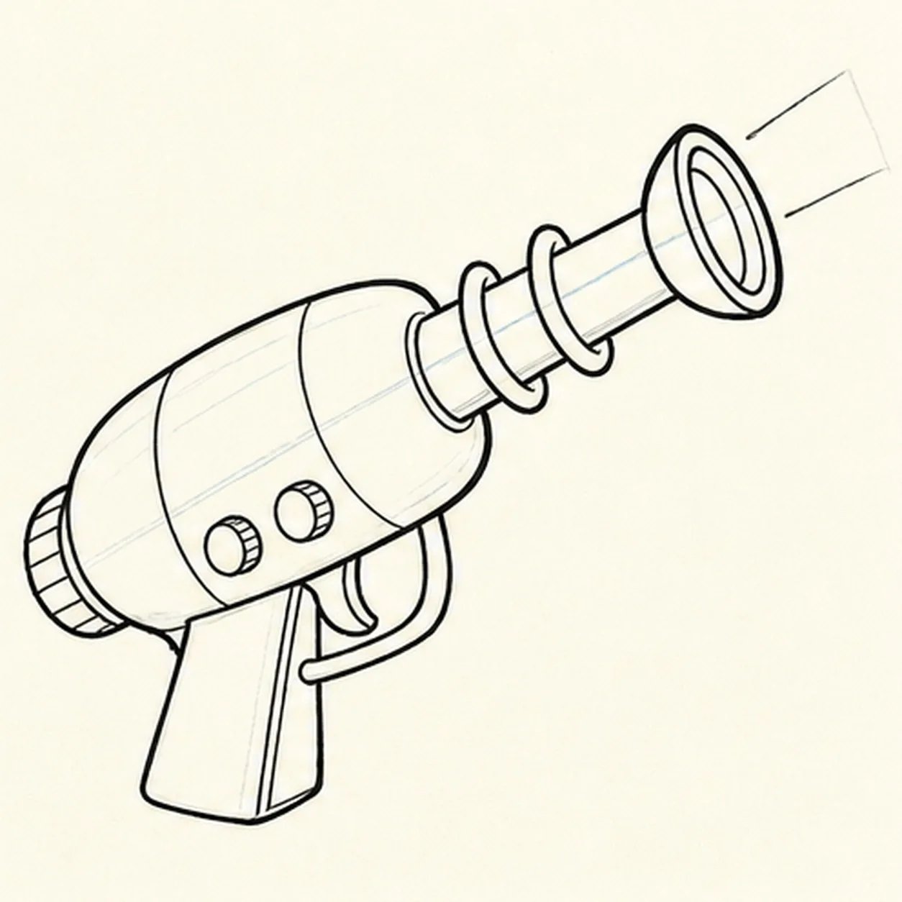
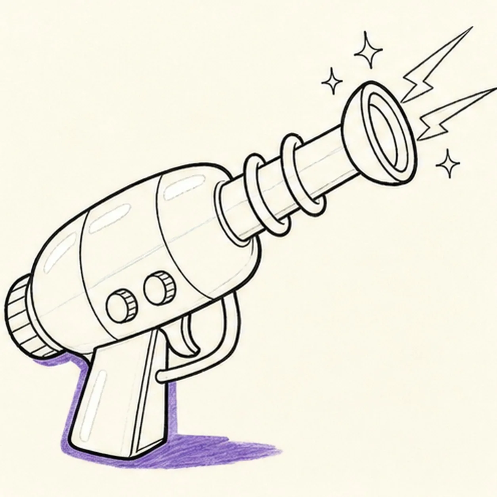
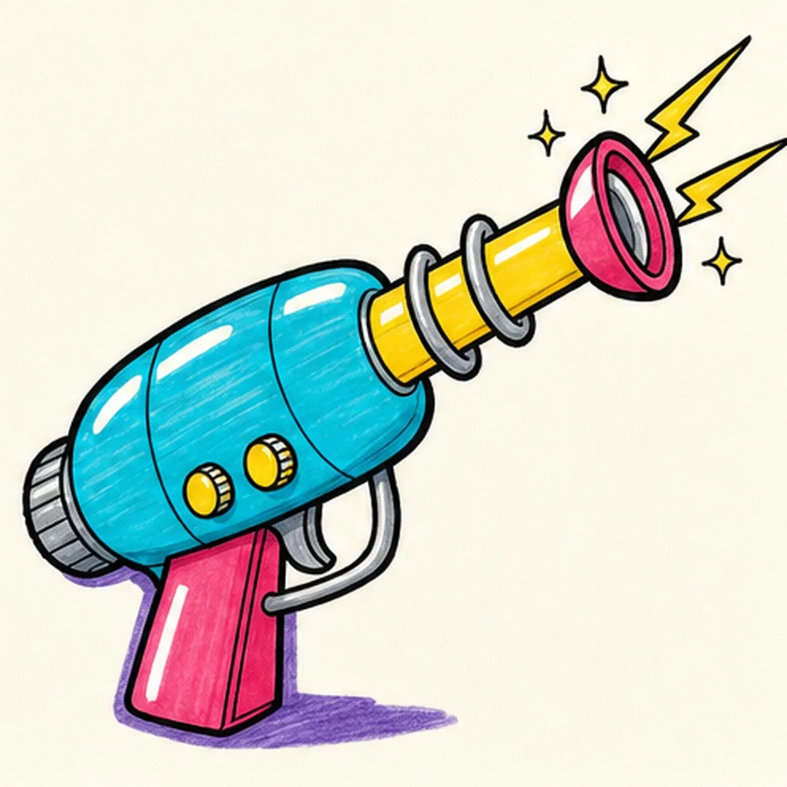

Marker ready?
Let's draw a comic ray gun
Treat this as one playful practice round: sketch the idea loosely, simplify the shapes, then commit with confident marker outlines and bright fills.
-
01

Set the ray-gun guides
Draw one light diagonal barrel axis, place the rounded body block and flared-muzzle ellipses on it, then add the grip wedge, trigger-guard reserve, rear cap, and two knob footprints.
Marker tip: Ghost the full barrel axis before touching down and keep every muzzle ellipse centered on it. Reserve the trigger and knob spaces so you do not ink body seams that those parts will cover.
-
02

Shape the space-age prop
Wrap the guides with the long barrel, flared muzzle, rounded body, angled grip, trigger guard, and rear cap while preserving the same diagonal pose.
Marker tip: Rotate the page for the barrel edges and pull them in confident passes. Compare the open trigger-guard space with the grip width so the lower half stays readable.
-
03

Build the comic hardware
Add the curved trigger, exactly two control knobs, three body seams, exactly two barrel coils, and double muzzle rings inside the completed silhouette.
Marker tip: Repeat the two coils as related loops around the shared barrel axis, then count the two knobs before moving on. Let the hardware stay a little uneven so it feels drawn by hand.
-
04

Add the comic energy
Draw exactly two tapered action rays from the muzzle, exactly three small sparks, narrow white highlight gaps, and one violet ground-shadow shape around the established prop.
Marker tip: Vary the three spark sizes and aim the two rays along the same outward burst. Leave the highlights as clean paper gaps now instead of trying to paint white over wet marker later.
-
05

Ink and color the ray gun
Thicken every established contour and fill the body cyan, the barrel and accents yellow, the muzzle and grip raspberry, the hardware cool gray, and the shadow violet.
Marker tip: Pull marker strokes along the barrel and around the body curve so the streaks reinforce the form. Let each color area dry before strengthening the nearby black edges.
-
06

Charge the comic finish
Strengthen the keeper outlines and clarify the established trigger, two knobs, three seams, two coils, two rays, three sparks, marker fills, highlights, and shadow.
Marker tip: Count two knobs, two coils, two action rays, and three sparks, then stop. A face, hand, target, sound-effect word, extra prop, sticker edge, or badge frame would crowd the clean retro silhouette.